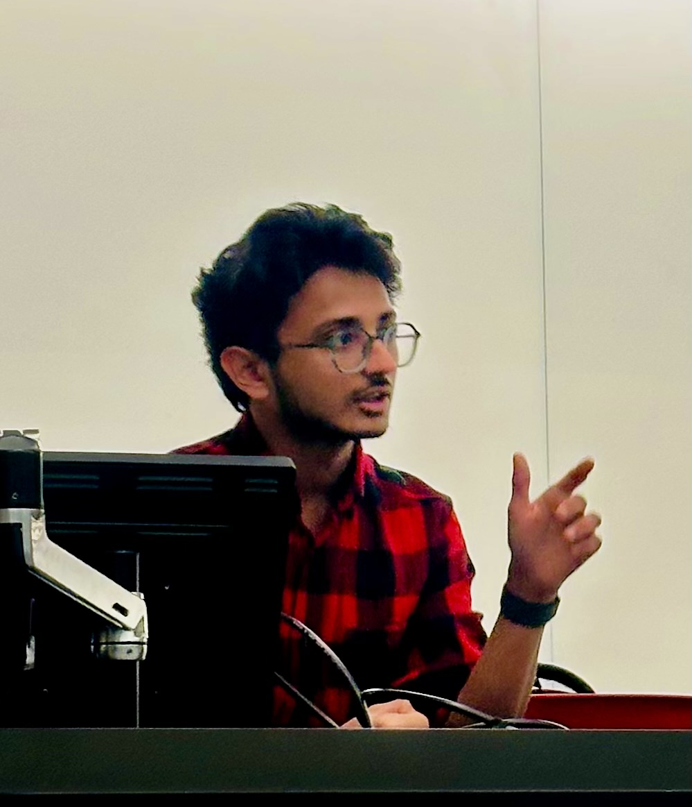

AI engineer building agentic systems and the infrastructure that keeps language models fast, observable, and useful.

I build the plumbing that makes language models useful in production: agents that call tools reliably, gateways that keep them fast and observable, and fine-tuning pipelines for when the base model is not enough. Most recently I worked with Zeblok Computational through CEWIT at Stony Brook University, shipping an MCP-based agent and its retrieval stack. I care about the boring parts, such as rate limits, tracing, and evaluation, because that is where most systems quietly fail.
Experience
June to August 2025
Remote, USA
Senior Research Aide, AI Engineer for Agentic Systems
CEWIT at Stony Brook University, for the client Zeblok Computational
Built an agent with MCP-based tool-calling capabilities, deployed via a high-concurrency Flask API with SSE streaming, achieving sub-200ms time-to-first-token on open-source LLMs.
Engineered modular MCP tool servers as reusable agent building blocks, enabling seamless integration of RAG, web search, and programmatic control of Zeblok's AI-MicroCloud platform, increasing system extensibility.
Improved top-K retrieval accuracy by 20% on held-out data by replacing fixed-size chunking with a hybrid chunking strategy in a multimodal retrieval pipeline that pulls context from PDFs and webpages, and increased answer coverage by adding synthetic QA pair generation.
A production-grade LLM API gateway supporting OpenAI, Anthropic, and Ollama, sustaining 100 RPS with under 2ms p95 overhead, distributed Redis-Lua rate limiting with zero quota leakage under load, and a full observability stack (12 custom Prometheus metrics, OpenTelemetry tracing with 22 spans per request) visualized in Grafana.
Python, Function Calling, FastAPI, Langfuse, Text-to-SQL, SQLAlchemy, React.js
A personal-finance agent routing complex queries across six specialized financial tools and a secure Text-to-SQL sandbox, with multi-turn memory across sessions, hardened against injection via server-side user-id binding and SQL allowlists, and Langfuse-based telemetry that helped raise routing precision from 40% to 90%.
Fine-tuned Microsoft Phi-3.5-mini (3.8B) on 2,000 cardiology MCQs using 4-bit QLoRA with chain-of-thought rationale supervision, evaluated across 12 adapter configurations to find a setup yielding a +2.6% increase in Top-2 accuracy and reduced positional bias from 7.3% to 2.7%.
A pipeline that turns full-length textbooks into LaTeX that compiles. It aligns OCR output back to the source PDF page by page with position-tracked fuzzy matching, rebuilds the bibliography, citations, and index, repairs figures with layout detection, and checks every build with a brace-balance pass and a compile-log parser. A regression harness scores each pipeline version against reference LaTeX for five textbooks.
Python, PyTorch, Hugging Face Transformers, FAISS, Sentence Transformers, RoBERTa
A team project on biomedical yes-or-no QA over PubMedQA. Instead of one larger model explaining the retrieved evidence, two smaller ones, Flan‑T5‑large and Qwen3‑0.6B, answer independently and debate until they agree, averaging 1.55 rounds, before a fine-tuned RoBERTa classifier reads the result. The debating pair reached 69.8% accuracy against 73.4% for a Llama 3.2 1B baseline, comparable accuracy from models that are each smaller than it.
A character-level GPT written from scratch in PyTorch and trained on Tiny Shakespeare: six transformer blocks with eight-head causal self-attention, 256-dimensional embeddings, and a 256-character context window, preceded by a bigram baseline to show what attention adds. Built to understand every step of the forward pass before relying on libraries that hide it.